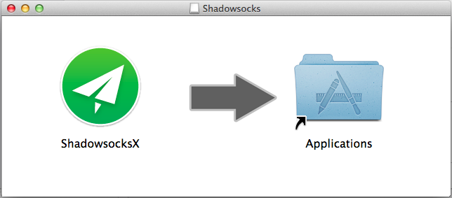
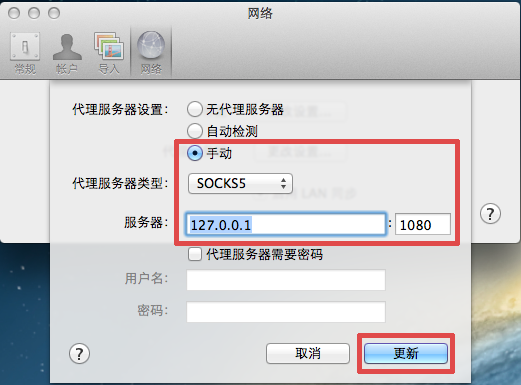

Mac OS X设置使用shadowsocks教程
第一步，下载用于Mac OS X的shadowsocksX软件
官方下载地址
百度网盘下载地址
第二步，打开下载的dmg文件，将程序图标拖到右边的Applications，安装完成

第三步，进入Launchpad，打开ShadowsocksX,右上方出现程序图标，点击图标--“服务器”--“打开服务器设定”

第四步，根据帐号信息，填写服务器地址（IP或者域名），端口，加密方式和密码，点确定
第五步，选择刚刚配置好的服务器，点“打开Shadowsocks”，Done!
打开Safari或者Chrome开始上网吧

有些应用需要单独设置，比如Dropbox
打开Dropbox首选项，“网络”--代理服务器“更改设置”，然后按下图设置即可


提示1 如果有网站打不开，或者图片刷不出来，切换全局试试
提示2 同样可以编辑PAC，自定义通过服务器代理的网站